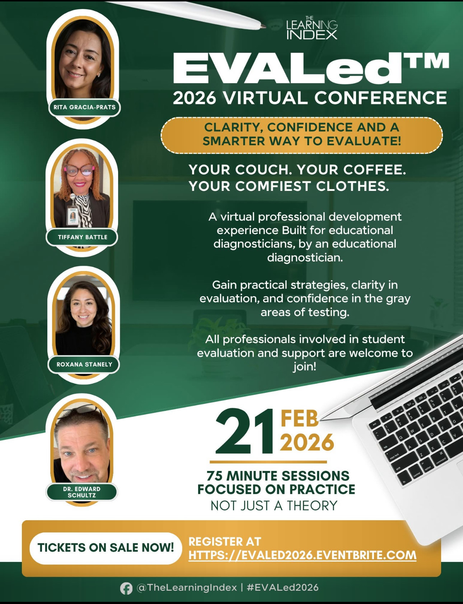

Professional learning built for evaluation teams.
EVALed™ connects diagnosticians, school psychologists, and special education professionals for practical training, meaningful conversation, and relevant application in today’s evaluation landscape.

Conference Highlights
The EVALed™ virtual conference brought together evaluation professionals from across Texas and beyond for a focused day of learning centered on documentation quality, ethical AI use, and practical workflow improvement.
Sessions emphasized real-world application: how to protect student information, strengthen report language, and use modern tools responsibly within district expectations.
- FERPA-conscious documentation and AI workflows
- Report writing efficiency without sacrificing quality
- Collaborative learning with peers who understand the work
- Practical takeaways teams could apply immediately



Who Attended
EVALed™ is designed for professionals who carry evaluation responsibility every day. Recent participants included:
- Educational Diagnosticians
- School Psychologists
- Special Education Leaders
- ARD and Assessment Team Members
- Related Service Providers
- Educational Support Staff
The Vision Behind EVALed™
Evaluation work is demanding, often isolated, and constantly evolving. EVALed™ was created to give professionals a space to learn together with relevance, respect, and practical focus.
We believe professional development should reflect the realities of school-based practice: limited time, high expectations, complex student needs, and the responsibility to protect sensitive information while still moving work forward.
EVALed™ will continue to grow as a conference and learning community where evaluation teams can strengthen skills, share perspective, and leave with tools and strategies they can use with confidence.
Stay connected with EVALed™
Join the list for updates on future conferences, sessions, and professional learning opportunities.
Join the List